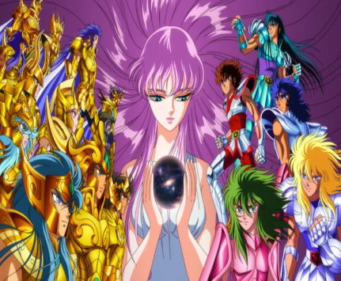
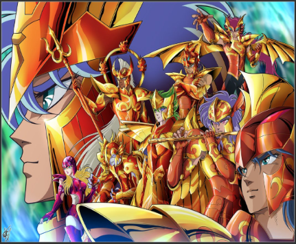

MANGAS
SAINT SEIYA

- Autor: Masami Kurumada
- Editorial: Shūeisha
- Emicion: 3 de diciembre de 1985 - 12 de diciembre de 1990
- VOLUMENES: 28
SAINT SEIYA: The Lost Canvas
- Autor: Shiori Teshirogi
- Editorial: Akita Shoten
- Emicion: 24 de agosto de 2006 - 7 de abril de 2011
- VOLUMENES: 25
SAINT SEIYA: Next Dimension

- Autor: Masami Kurumada
- Editorial: Akita Shoten
- Emicion: 27 de abril de 2006 - en emicion
- VOLUMENES: 13 actualmente
SAINT SEIYA: Saintia Sho
- Autor: Chimaki Kuori
- Editorial: Akita Shoten
- Emision: 19 de agosto de 2013 - 19 de julio de 2021
- VOLUMENES: 16
ANIME
SAINT SEIYA


- Direccion: -Kōzō Morishita (1-73)
-Kazuhito Kikuchi (74-114)
- Estudio: Toei Animation Inc
- Emision: 11 de octubre de 1986 - 1 de abril de 1989
- Capitulos: 114
- Saga Del Santuario (1-73)
- Saga De Asgard (74 - 99)
- Saga De Poseidon (100 - 114)
OVA Y SPIN OFF
SAINT SEIYA: Saga De Hades (OVA)
- Director: Shigeyasu Yamauchi
- Estudio: Toei Animation
- Emision: 9 de noviembre de 2002 - 12 de abril de 2003
- Capitulos: 31 - Saga Del Santuario (1 - 13)
- Saga Del Infierno (14 - 25)
- Saga De Los Campos Elision (26 - 31)
SAINT SEIYA: Soul Of Gold
- Director: Takeshi Furuta
- Estudio: Toei Animation
- Emision: 11 de abril de 2015 - 26 de septiembre de 2015
- Capitulos: 13
SAINT SEIYA: The Lost Canvas
- Director: Osamu Nabeshima
- Estudio: Toei Animation
- Emision: 24 de junio de 2009 - 20 de julio de 2011 (Sin finalizar)
- Capitulos: 26